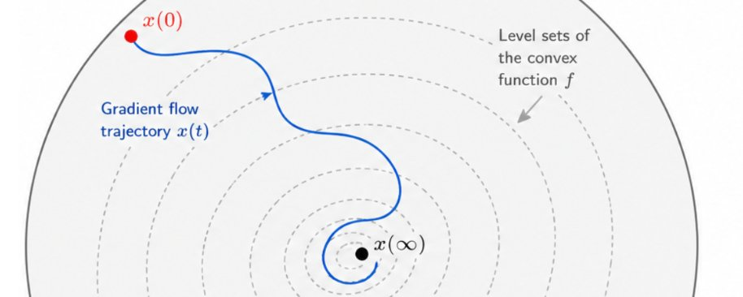
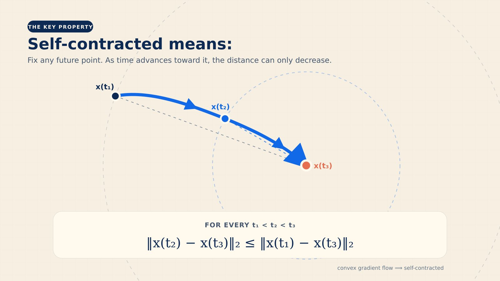
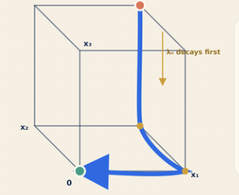

A single question to track progress from o3 to gpt-5.6 and beyond

How long can be the path of a gradient flow on a convex function given the constraint that it stays within the unit Euclidean ball in dimension n?
^ this is the question I have been using for 2 years now to test AI's progress. It is eerily simple to state yet devilishly hard to solve. In 168 minutes of thinking, GPT-5.6 was able to very significantly beat the published SOTA on this question, in a way that no other model was able to do so far. But I'm getting ahead of myself, let's first think a bit about the question, review the literature, and then discuss what the progress from o3 to gpt-5.6 has been like.
1. SOTA
Naively one might say: "well gradient descent has a convergence rate that is dimension-free --which is why it's exciting to use for many-parameters problems!-- so probably the length of such a flow should also be dimension-free?". Well, sometimes naive takes can be dead wrong. For starters: are such curves even rectifiable (i.e., of finite length, nevermind the dimension dependency)??? Even that is not easy to prove, and in fact it is FALSE for Nesterov's accelerated gradient descent (see this paper by @ErnestRyu, all done with gpt-5.5).
Okay so what exactly is known about this question? Well, there is a beautiful 1991 paper by Manselli and Pucci that show that such curves are indeed rectifiable, and moreover their length is at most n^O(n). Yes you read that correctly, even worse than exponential in the dimension, that's the best bound from 35 years ago!! Btw this paper also points out that such curves are what's called "self-contracted", i.e. they are always getting closer to their future (take any point on the curve at time t, then dist(x(s), x(t)) is non-increasing for s<t; see illustration below).
Now what about lower bounds, i.e. constructing an actually long self-contracted curve? A standard thing to look at from the convex optimization literature would be an ill-conditioned quadratic, something like x_1^2 + large_cst*x_2^2 + even_larger_cst*x_3^2 + ... The point is that gradient descent will first go almost straight along the direction with the largest_cst, then go in the second_largest_cst direction, and so on (see illustration below). So the total length of the path will be roughly n, and the path is contained in the hypercube which is contained in a ball of radius sqrt(n), so by rescaling we get a sqrt(n)-length self-contracted curve.
That's it. That's the published SOTA: upper bound of n^O(n) and lower bound of sqrt(n). Quite the gap for such a simple and natural question!!!


2. Unpublished work by humans
I thought about this question 8 years ago with amazing collaborators Omer Angel, Tomas Merchan Rodriguez, and Fedja Nazarov. We were able to make quite a bit of progress and established that the answer is indeed exponential in the dimension!! Specifically we had a lower bound of sqrt(2)^n and an upper bound of 4^n. The paper with these estimates is neatly written and has been sitting in my dropbox folder for close to a decade now, in part because we knew that these bounds could be improved further. And indeed Tomas and Fedja made more progress, first by pushing the lower bound to 2^n and also improving the upper bound to 2.29...^n. Note that my own understanding of the problem stayed at slightly-better-than-sqrt(2)^n lower bound and 4^n upper bound (in fact, I had forgotten the 2^n and the 2.29^n until AI started to make progress on this ... more below).
3. AI progress
o3 was the first AI model to even understand the question. Yes, you read that sentence correctly. Maybe you forgot, but two years ago it wasn't even clear that an AI could UNDERSTAND such deceitfully simple questions, let alone solve them. In particular o3 could see that the question was in fact about self-contracted curves, and knew what SOTA was on this question. I was highly highly impressed back then.
But then things got tricky, and with the arrival of the GPT-5 series of models I used this question as a cautionary tale: as recently as February this year I would give this question in talks about LLMs progress in math as an example of a question you should NOT ask to LLMs. The reason is that GPT-5 or even GPT-5.2/5.4 would TRY to give complicated answers, but they were invariably wrong somewhere, and one would waste a lot of time checking those. So it was a good example that in order to not waste time with LLMs in math one should know the right level of question to ask.
This changed with GPT-5.5, and suddenly with a lot of back and forth and expert prompting, Mark Sellke was able to re-discover the 2^n lower bound construction (which I was SHOCKED by, in part because I had forgotten Tomer and Fedja already knew it 😅). On the other hand no luck at all on the upper bound.
And now comes GPT-5.6, and the progress of AI comes fully into view:
- GPT-5.6-pro ONE SHOTS the 2^n lower bound. You can see the one-shot here (80 minutes of thinking): https://chatgpt.com/s/t_6a50cb2a29488191b643ecb2426df87d
- GPT-5.6-pro ONE SHOTS the 4^n upper bound, and in fact does so very quickly in its CoT, and by the end of its thinking it produces a 2.31...^n upper bound. Not quite matching Fedja's 2.29...^n (and in fact the 2.31...^n strategy cannot be improved further without new ideas -- in fact Fedja noted that himself in a MathOverflow post in 2018: "[for 2.31..] the argument gets somewhat messy and it is clear that this way won't lead to the optimal estimate"). But still pretty darn impressive and beyond what I had personally understood about the problem back when I worked seriously on it. You can see the one-shot here, done in 88 minutes of thinking: https://chatgpt.com/share/6a50764e-3eec-83ea-97e6-3d1f30c07b64
4. A challenge for the future
This story currently still has the humans as the winner. 2.29 for humans versus 2.31 for machines. Naturally, the conjecture is that self-contracted curves cannot be longer than 2^n (which would then be the optimal answer given the 2^n lower bound). This seems very hard to prove and beyond GPT-5.6's abilities. How long will I be able to use this question to track progress of AI? I suspect it might be less than 6 months ...
PS: I copy pasted the above post into ChatGPT work and asked it to come back with illustrations for it. The collection of pictures here were obtained one-shot from that query.